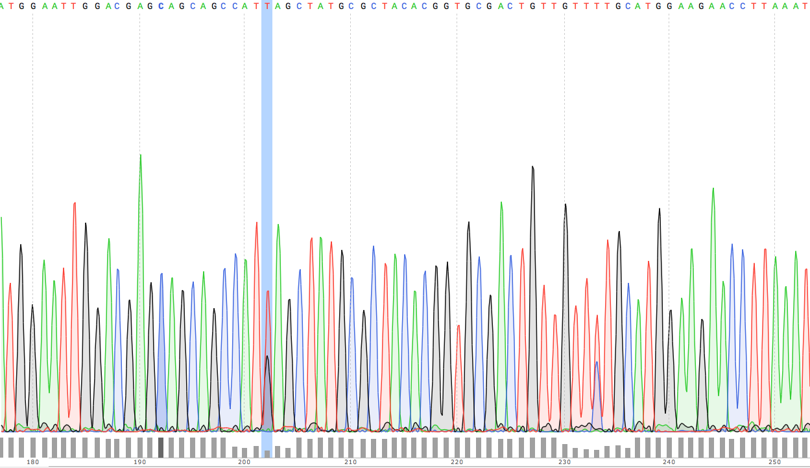

(org-babel-tangle-file "README.org")
Le dossier contient les données du séquençage des deux plaques envoyées à la suite des manips de Florence.
1 Analyse globale des SNP
La première approche globale consiste à extraire les données de séquence des fichiers .ab1 contenant les spectrogrammes et de les convertir en fastq, de façon à conserver l'information de qualité du pic. Les séquences sont ensuite trimmées, pour ne conserver que les positions dont la qualité est suffisante. La qualité des séquences obtenues est contrôlée avant et après trimming.
Les séquences fastq obtenues sont ensuite poolées dans un même fichier
trimmed.fastq, et alignées avec la séquence de référence. Les positions de SNP
sont inférées. Le tableau de donnée obtenu est analysée dans R.
1.1 Extraction des données brutes
Pour extraire les données du fichier brut .zip à la structure de données.
#!/bin/bash cd ~/stage/seq_novembre/ # Le script qui extrait les données depuis les fichiers zip bruts et qui met en # place la structure de fichier. cd ./data ## extraction des données brutes unzip raw_seq_nvbr/1369607.zip unzip raw_seq_nvbr/1369628.zip ## crée les dossiers mkdir fasta seq spectrograms csv ## déplace tout les fichiers dans des dossiers adaptés find . -name "*.fas" -exec mv -i {} -t ./fasta/ \; find . -name "*.ab1" -exec mv -i {} -t ./spectrograms/ \; find . -name "*.seq" -exec mv -i {} -t ./seq/ \; find . -name "*.csv" -exec mv -i {} -t ./csv/ \; # déplace le contenu du dossier inutile dans le présent dossier mv 1369628/* ./ rm -r 1369628 # supprime le dossier # déplace le fichier pdf dans le dossier adapté mv *.pdf ../analysis
Les spectrogrammes contiennent l'info de la sequenceid et du nom. On construit une table avec la qualité du mutant en troisième colonne.
from Bio import SeqIO import glob def strong_or_weak(record): """ Determine si le mutant est strong ou weak """ if 'S' in record: return 'strong' else: return 'weak' # en-tete de colonne print "id name mutant" # pour chaque fichier ab1 for file in glob.glob("../data/spectrograms/*.ab1"): with open(file, "rb") as spectro: for record in SeqIO.parse(spectro, "abi"): # associer l'id avec le nom et le type de mutant print record.id + " " + record.name + \ " " + strong_or_weak(record.name)
On crée la table en question via :
cd ~/stage/seq_novembre/scripts
python make_id_table.py > ../data/id_table.dat
1.2 Des spectrogrammes aux données fastq non-trimmées
1.2.1 prérequis
brew install emboss
1.2.2 via seqret
cd ~/stage/seq_novembre/scripts touch untrimmed.fastq for file in ../data/spectrograms/*.ab1 do seqret \ -sformat abi \ -osformat fastq \ -auto \ -stdout \ -sequence $file \ >> ../data/untrimmed.fastq done ## convertit le fastq en fasta seqret \ -sformat fastq \ -osformat fasta \ -auto \ -stdout \ -sequence ../data/untrimmed.fastq \ > ../data/untrimmed.fasta
1.3 Des données non-trimmées aux données trimmées et filtrées
Un script qui convertit le fichier ./data/untrimmed.fastq en fichier ./data/trimmed.fastq. bbduk trimme les bases de faible qualité. seqtk convertit les bases restantes de faible qualité en N, seqret convertit le fastq généré en fasta.
#!/usr/local/bin/bash #' -qtrim=rl : quality trim right and left #' -trimq=28 : trim if quality < 28 (sanger encoding, illumina 1.9) #' -minlen=620 : keep only seq with length > 620, after trimming. #' -Xmx1g : tells bbduk / java to use 1G of RAM if [[ -f ../data/untrimmed.fastq && ! -f ../data/trim.fastq ]] then # si les fichiers n'existent pas. ~/.bin/bbmap/bbduk.sh -Xmx1g \ -in=../data/untrimmed.fastq \ -out=../data/trim.fastq \ -qtrim=rl \ -trimq=28 \ -minlen=620 ## convertit les bases d'une qualité inférieure à 20 en N. seqtk seq -q20 -nN ../data/trim.fastq > ../data/trimmed.fastq ## convertit le fastq en fasta seqret -sformat fastq -osformat fasta -auto -stdout \ -sequence ../data/trimmed.fastq > ../data/trimmed.fasta rm ../data/trim.fastq else printf "Le fichier untrimmed.fastq n'existe pas, ou le fichier trimmed.fastq existe déjà." fi
1.4 Contrôle de la qualité des séquences
Le script utilisé pour analyser les données de qualité via fastqc.
#!/usr/local/bin/bash cd ~/stage/seq_novembre/scripts # quand dans le dossier ./scripts cd ../data/ if [ -f untrimmed.fastq ] && [ -f trimmed.fastq ] ; then mkdir tmp # analyse les données et output dans tmp fastqc untrimmed.fastq -o ./tmp fastqc trimmed.fastq -o ./tmp # unzip resulting files unzip -qq tmp/untrimmed_fastqc.zip -d tmp unzip -qq tmp/trimmed_fastqc.zip -d tmp # extract main results mv tmp/untrimmed_fastqc/Images/per_base_quality.png \ ../analysis/per_base_quality_fastqc_untrimmed.png mv tmp/trimmed_fastqc/Images/per_base_quality.png \ ../analysis/per_base_quality_fastqc_trimmed.png # copy html into analysis mv tmp/*.html ../analysis/ # delete tmp files rm -r tmp # remove temporary files else printf "Les fichiers untrimmed.fastq et trimmed.fastq n'existent pas." fi
1.5 Détermination des SNP
#!/bin/bash # variant calling using ssaha2 and ssaha2SNP cd ~/stage/seq_novembre/data ## prend le reverse complement de la séquence de référence fastx_reverse_complement -i reference.fasta -o reference_reverse.fasta mkdir variantCalling cd variantCalling ## place les séquences nécessaires pour l'analyse dans le dossier. ln -s ../trimmed.fastq . ln -s ../reference_reverse.fasta ./reference_reverse.fasta ## alignement à la séquence de référence #' -output psl : format de sortie psl #' reference_reverse.fasta : séquence de référence #' trimmed.fastq : séquence à aligner #' output.psl : fichier de sortie ~/.bin/ssahaSNP/ssaha2 -output psl reference_reverse.fasta trimmed.fastq > output.psl ## polymorphism detection tool ~/.bin/ssahaSNP/ssahaSNP reference_reverse.fasta trimmed.fastq > SNP.txt ## computer readable format conversion # egrep trouve les lignes où sont indiquées les données concernant les SNP # awk extrait les champs en question dans un fichier SNP.dat egrep ssaha:SNP SNP.txt | \ awk '{print $1,$2,$3,$4,$5,$6,$7,$8,$9,$10,$11,$12,$13,$14,$15}' > SNP.dat ## column annotation based on ## ftp://ftp.sanger.ac.uk/pub/resources/software/ssahasnp/readme, ## part (6) some further information # la première ligne du fichier .dat, afin d'être lu dans R echo " match subject_name index_of_subject read_name s_base q_base s_qual q_qual offset_on_subject offset_on_read length_of_snp start_match_of_read end_match_of_read match_direction length_of_subject " > head.dat # into final document cat head.dat SNP.dat > snp_calling.dat
1.6 Analyse des variants
1.6.1 Lecture des données et nettoyage
[ ]nettoyer la partie "-1073" en trop dans les noms de séquence, et vérifier au long du code que ça ne pose pas de problème.
Le fichier file:~/stage/seq_novembre/data/variantCalling/snp_calling.dat contient les données d'intérêt. Il ne contient ni le nom du transformant, ni son type (Weak ou Strong). Les données sont récupérées dans le fichier ./data/id_table.dat. Les deux tables sont associés via un inner-join.
On s'est rendu compte que le plasmide pS60 était un contaminant, toutes les
mutations qu'il engendre sont de type weak. Il est donc rebasculé dans le
tableau des Weak.
setwd("~/stage/seq_novembre/data/variantCalling") library(dplyr) ## read the data snp <- tbl_df(read.table("snp_calling.dat", head = TRUE)) ## enlève les colonnes inutiles snp %>% select( -match, -subject_name, -index_of_subject, -length_of_subject, -match_direction, -contains("_of_read"), -contains("on_read"), -contains("_of_snp"), -s_qual ) -> snp ## lit les métadonnées de séquence id_table <- tbl_df(read.table("../id_table.dat", head = TRUE)) ## fait correspondre le read_name avec le nom du clone et le type de mutant W ou S snp <- inner_join(x = snp, y = id_table, by = c("read_name" = "id")) ## suppress tmp var rm(id_table) ## bascule les contaminants mysterieux dans la bonne catégorie ## TESTE ET APPROUVE snp$mutant[snp$name == "pS60-1073"] <- "weak" snp$mutant[snp$name == "pS83-1073"] <- "weak" snp$mutant[snp$name == "pS92-1073"] <- "weak" snp$mutant[snp$name == "pS91-1073"] <- "weak" snp$mutant[snp$name == "pW6-1073" ] <- "strong"
1.6.2 Détermine la qualité des SNP
Pour déterminer si le SNP est de type weak ou strong, j'utilise la fonction
mutant_caller. Si la référence est A ou T, soit le transformant est C ou G, et
la substitution est WS ; soit le transformant est A ou T, et la mutation est
WW. Si la référence est C ou G, soit le transformant est A ou T, et la
substitution est SW ; soit le transformant est G ou C, la substitution est
SS.
#' une fonction pour déterminer si la substitution est strong ou weak. On peut #' avoir des substitutions weak chez les strongs #' @param subject la base sur la séquence de référence #' @param query la base sur le read. mutant_caller <- function(subject, query) { if (subject == 'A' || subject == 'T') { if (query == 'C' || query == 'G' ) { 'WS' } else { 'WW' } } else if (subject == 'C' || subject == 'G') { if (query == 'A' || query == 'T') { 'SW' } else { 'SS' } } } ## on applique la fonction rowwise, ie ligne par ligne, via `mutate`, puis on ## dégroupe. snp %>% rowwise() %>% mutate(mutation_type = mutant_caller(s_base, q_base)) %>% ungroup() -> snp ## conversion en facteur snp$mutation_type = factor(snp$mutation_type)
1.6.3 Graphiques globaux
Des graphiques de distribution globale des SNP sont fait ici.
##============================================================================== ## SHORTCUT PLOT FUNCTION ##============================================================================== library(ggplot2) ##' .. content for \description{} (no empty lines) .. ##' ##' Une fonction qui permet de court-circuiter ggplot : représente en ordonnée ##' la distribution des positions de snp, en abscisse la position des SNPs, par ##' défault la couleur repéresente le type de mutant, peut être également ##' attribuée à mutation_type. Respecte les critères visuels de tufte. Nécessite ##' ggplot2 1.02 si je ne m'abuse, avec l'option panel.ontop en tout cas. ##' ##' .. content for \details{} .. ##' @title plot_snp ##' @param snp les données de snp ##' @param fill la couleur par laquelle on color les barres ##' @param legend_position la position de la légende sur le graphe ##' @param legend_name le titre de la légende. rien par défault ##' @return un graphique plot_snp <- function(data, fill_by = "mutant", legend_position = c(0.2, 0.8), legend_name = "") { plot <- ggplot(data = data, aes(offset_on_subject)) + theme_minimal(base_family = "Courier") + scale_x_continuous(breaks = seq(1, 734, 30)) + scale_fill_brewer(palette = "Set2", name = legend_name) + xlab("") + ylab("") + theme(panel.ontop = TRUE, legend.position = legend_position, axis.text = element_text(size = 8, colour = "gray"), panel.grid.major.x = element_blank(), panel.grid.minor.x = element_blank(), panel.grid.minor.y = element_blank(), panel.grid.major.y = element_line(colour = "white", size = 1)) if (fill_by == "mutation_type") { plot + geom_histogram(aes(fill = mutation_type), binwidth = 10, position = "dodge") } else { plot + geom_histogram(aes(fill = mutant), binwidth = 10, position = "dodge") } } ##============================================================================== ## PLOT DISTRIBUTIONS ##============================================================================== pdf(file = "../../analysis/snp_distribution.pdf", height = 5.8, width = 8.3) ## distribution des SNP ## facétée par type de mutant, couleur = type de mutation snp %>% plot_snp(legend_name = "Exogene", legend_pos= c(.2, .8)) dev.off() #------------------------------------------------------------------------------- pdf(file = "../../analysis/mutant_snp_distribution.pdf", height = 5.8, width = 8.3) snp %>% plot_snp(fill_by = "mutation_type", legend_name = "Type de Mutation" ) + facet_grid(mutant ~ .) dev.off()
1.6.4 Observations globales
Différents tableaux de résumé généraux.
## ============================================================================= ## OBSERVATIONS GÉNÉRALES ## ============================================================================= sink(file = "../../analysis/observations.tex") snp %>% group_by(mutant, name) %>% summarise(count = n()) %>% summarise(mean = mean(count), med = median(count), sd = sd(count) ) %>% knitr::kable( align = 'c', digits = 2, booktabs = TRUE, format = "latex") sink() sink(file = "../../analysis/count_by_mutant.tex") snp %>% group_by(mutant) %>% summarise(count = n()) %>% knitr::kable( align = 'c', booktabs = TRUE, format = "latex") sink() sink(file = "../../analysis/count_by_muttype.tex") snp %>% group_by(mutation_type) %>% summarise(count = n()) %>% knitr::kable(col.names = c("Type de mutation", "nombre"), align = 'c', booktabs = TRUE, format = "latex") sink() sink(file = "../../analysis/seq_by_mutant.tex") distinct(snp, name, mutant) %>% group_by(mutant) %>% summarise(count = n()) %>% knitr::kable( align = 'c', booktabs = TRUE, format = "latex") sink()
1.6.5 Détermination des SNP calibrés [2/2]
[X]créer la fonctionis_a_positionqui détermine si un SNP est bien à la position attendu[X]faire la même chose par type de mutant
On veut filtrer les positions qui sont bien les SNP calibrés.
## ============================================================================== ## SNP ATTENDUS OU NON ## ============================================================================== ## ## compte le nombre de SNP par position. hypothèse : un SNP `calibré' génère au ## moins 5 SNP parmi toutes les séquences. sortie dans une table qui sert de ## query à la fonction =is_position= snp %>% group_by(offset_on_subject) %>% summarise(count = n()) %>% ## qplot(data = ., offset_on_subject, count) filter(count > 5) %>% select(offset_on_subject) %>% unlist() %>% as.vector() -> position_table ##' .. content for \description{} (no empty lines) .. ##' détermine si la postion sur la séquence de référence est un SNP artificiel ##' ou un autre genre de SNP. ##' .. content for \details{} .. ##' @title is_position ##' @param position ##' @param table ##' @return "oui" ou "non" is_position <- function(position, table) ifelse(position %in% table, 'oui', 'non') snp %>% rowwise() %>% mutate(position = is_position(offset_on_subject, position_table)) %>% ungroup() -> snp
Le graphique suivant représente la distribution des SNP aux positions inattendues.
pdf(file = "../../analysis/bgc_en_action.pdf", height = 5.8, width = 8.3) snp %>% filter(position == "non") %>% plot_snp(fill_by = "mutation_type") + scale_y_continuous(breaks = c(1, 2)) + scale_x_continuous(breaks = position_table, name = waiver()) + ggtitle("Substitution aux positions inattendues : biaisees vers GC ?") + theme(panel.grid.major.x = element_line(colour = "gray")) dev.off() sink(file = "../../analysis/bgc_en_action.tex") snp %>% filter(position == "non") %>% group_by(mutation_type) %>% summarise(count = n()) -> bgc_en_action colnames(bgc_en_action) <- c("Type de Substitution", "Nombre") print(xtable::xtable( bgc_en_action, align = 'ccc'), include.rownames = FALSE) sink()
1.6.6 Positions terminales de switch [1/3]
[ ]voir le test à utiliser pour comparer les distributions[ ]comparer les distributions statistiquement, si \(n\) est suffisamment grand.[X]Naïvement on utilise ici la position terminale du dernier SNP. Cependant, il existe des SNPs qui ne sont pas dans la conversion track, c'est ce qu'on a observé. Il faut donc définir une nouvelle fonctionmax_posqui définit si on est bien à un SNP calibré ou non. voir après avoir définit la fonctionis_a_position. => Simplement filtrer par position
On veut ici analyser la distribution des positions terminales de SNP. C'est à dire à quel endroit on bascule à nouveau sur le génotype sauvage. On ne garde que les positions qui sont des positions calibrées.
##============================================================================== ## POSITION DE SWITCH ##============================================================================== pdf(file = "../../analysis/switch_distrib.pdf", height = 5.8, width = 8.3) snp %>% ## par plasmide -- et par type de mutant group_by(name, mutant) %>% ## garde seulement les positions calibrées filter(position == "oui") %>% ## cherche la postion minimale de SNP summarise(offset_on_subject = min(offset_on_subject)) %>% ## represente la distribution plot_snp(legend_position = c(0.8, 0.8)) + ggtitle("Distribution de la position de switch en fonction du type de mutant") + ## superpose les deux distribution pour comparer facet_grid( mutant ~ .) dev.off()
1.6.7 Néomutations [1/1]
[X]rajouter le filtre sur les positions calibrées.
Le but est de trouver les SNPs aux positions calibrées qui ne sont pas ceux attendus. Typiquement ce sont les mutations strong dans la manip Weak, et les mutations weak dans la manip Strong. Si les mutations en questions sont répétées sur l'ensemble du clone, alors c'est une contamination. Sinon, ce sont des données intéressantes.
##============================================================================== ## OUTLIERS ##============================================================================== ## ##' .. content for \description{} (no empty lines) .. ##' ##' Détermine si le SNP en question est un outlier ou non, c'est à dire une ##' mutation strong chez un mutant weak ou inversement. ##' ##' .. content for \details{} .. ##' @title is_outlier ##' @param mutant : le type de mutant ##' @param mutation_type : le type de substitution ##' @return is_outlier <- function(mutant, mutation_type) { if (mutant == 'strong' && mutation_type == 'SW') { "non" } else if (mutant == 'weak' && mutation_type == 'WS') { "non" } else { 'oui' } } snp %>% ## par ligne, determine si la position est inattendue rowwise() %>% mutate(attendu = is_outlier(mutant, mutation_type)) %>% ungroup() %>% ## garde les positions calibree filter(position == "oui") %>% ## sur lesquelles le résultat est inattendu filter(attendu == "non") %>% plot_snp(legend_position = c(0.2, 0.9)) + geom_text(aes(label = name, y = 0.5), check_overlap = TRUE, position = "dodge") + coord_flip() + theme(panel.ontop = FALSE) ## sortie des résultats dans un joli tableau latex sink( file = "../../analysis/outlier.tex", append = FALSE) snp %>% rowwise() %>% mutate(attendu = is_outlier(mutant, mutation_type)) %>% ungroup() %>% filter(attendu == "non") %>% mutate(position = offset_on_subject, ref = s_base, read = q_base) %>% select(-read_name, -offset_on_subject, -s_base, -q_base) %>% knitr::kable(format = "latex", booktabs = TRUE) sink() ## pdf(file = "../../analysis/outliers.pdf", width = 4, height = 2)
La liste des constructions qui montrent des néo-mutations :
library(dplyr) read.csv("~/stage/seq_novembre/data/variantCalling/snp_table.csv") %>% filter(position == "non") %>% select(name) %>% unique()
1.6.8 Position des SNP par rapport à la conversion tract [1/1]
[X]Écrire une fonctionis_inside_convqui détermine si un SNP est en dehors ou en dedans de la conversion tract.
snp %>% ## par exogene group_by(name) %>% ## garde seulement les positions attendues filter(position == "oui") %>% ## cherche la borne supérieure et inférieure summarise(min = min(offset_on_subject), max = max(offset_on_subject)) %>% ## combine avec la table mère inner_join(snp, by = "name") -> snp ##' .. content for \description{} (no empty lines) .. ##' détermine si le SNP est dans la conversion tract ou non. ##' .. content for \details{} .. ##' @title ##' @param query la position requête ##' @param min la borne inférieure de la conversion tract ##' @param max la borne supérieure de la conversion tract ##' @return oui ou non is_inside_conv <- function(query, min, max) { ifelse(min <= query & query <= max, "oui", "non") } sink(file = "../../analysis/inside_conv.tex") snp %>% rowwise() %>% ## détermine si on est dans la conversion tract ou non mutate(inside_conv = is_inside_conv(offset_on_subject, min, max)) %>% ungroup() %>% ## filtre pour avoir les snp non attendus filter(position == "non") %>% ## groupe selon qu'on est dans ou en dehors de la CT group_by(inside_conv) %>% ## compte le nombre de snp par cas summarise(count = n()) %>% ## format en .tex knitr::kable(format = "latex", booktabs = TRUE) sink()
1.6.9 Polymorphisme [2/2]
En analysant visuellement les spectrogrammes aux positions de SNP attendues, on
s'est rendu compte qu'il persistait des variants, et notamment chez les
constructions weak. Dans une première approche, on utilise la qualité de la
position comme proxy du polymorphisme à cette position. En effet, l'algorithme
de quality-calling est très sensible aux polymorphismes, autrement dit à la
présence de pics parasites. On peut donc raisonnablement se dire que les SNP de
faible qualité, notamment en fin de conversion tract, correspondent à des SNP
hétérogènes. Ce qui pourrait s'expliquer par une absence de réparation à la
génération 0, mais que les descendants 01 et 02 réparent chacun d'une façon
différente.
1.6.9.1 Graphiquement
On veux étudier le polymorphisme aux positions calibrées. Comme on ne peut pas avoir accès aux données trace par trace, on utilise la qualité comme proxy du polymorphisme.
pdf(file = "../../analysis/qualite_distrib.pdf", height = 5.8, width = 8.3) snp %>% filter(position == "oui") %>% qplot(data = ., x = offset_on_subject, y = q_qual, color = mutant, alpha = 0.1) + theme_minimal(base_family = "Courier") + scale_color_brewer(palette = "Set2", name = "") + scale_alpha_continuous(guide = FALSE, name = "") + xlab("Position") + ylab("qualite") + scale_x_continuous(breaks = position_table) + theme(legend.position = c(0.5, 0.2), axis.text = element_text(size = 8, colour = "gray")) dev.off()
./analysis/qualite_distrib.pdf
Aux positions inférieures à 700bp, la qualité de certains SNP diminue, notamment chez les WEAK. En fait quasiment exclusivement dans la construction WEAK. Aux positions supérieures à 700bp, il y a également des baisses de qualité pour les constructions STRONG. Difficile à ce stade de déterminer s'il s'agit de bruit ou de signal.
L'inconvénient de cette approche par la qualité est qu'elle ne permet pas de connaître la nature de la base correspondant au signal "parasite". Or, lorsqu'on observe les spectrogrammes visuellement, souvent, le signal qui persiste est celui attendu dans la séquence sauvage. Autrement dit, lorsque le gène synthétique oppose un allèle W à un allèle sauvage S, d'une manière ou d'une autre, le signal sauvage S persiste dans la population descendante que l'on séquence.
1.6.9.2 Fréquence des bases polymorphes associées aux SNP attendus
sink("../../analysis/freq_polymorphism.tex") snp %>% filter(position == "oui", q_qual < 40, offset_on_subject < 600) %>% group_by(mutant) %>% summarise(count = n()) %>% knitr::kable(format = "latex", booktabs = TRUE) sink() snp %>% filter(position == "non", q_qual < 40, offset_on_subject < 600) #%>% group_by(mutant) %>% summarise(count = n())# %>% knitr::kable(format = "latex", booktabs = TRUE) snp %>% mutate(name = gsub("-1073", "", x = name)) %>% filter(position == "oui", q_qual < 40, offset_on_subject < 600) %>% group_by(name) %>% summarise(count = n()) -> #%>% ## filter(count > 1) -> candidats snp %>% filter(name == "pW6-1073") %>% qplot(data = ., x = offset_on_subject, y = q_qual, geom = "line", xlim = c(0, 750)) + geom_vline( xintercept = 456, color = "red") + geom_vline(xintercept = position_table, color = "blue", alpha = 0.2) snp %>% mutate(name = gsub("-1073", "", x = name)) %>% filter(name %in% candidats$name) %>% ggplot(data = ., aes(x = offset_on_subject, y = q_qual, colour = name)) + geom_line() + facet_grid(name~mutant) + theme_minimal() + theme(text = element_text(size = 6)) ggsave(filename = "~/stage/seq_novembre/analysis/candidats_heterozygotes.pdf", width = 29.7, height = 21, units = "cm")
—
1.6.10 Sauvegarde du tableur
write.csv(snp, file = "snp_table.csv", quote = FALSE)
2 Analyse des positions hétérozygotes
L'approche précédente utilisait la qualité comme proxy du polymorphisme aux positions de SNP attendues. Dans cette seconde approche, le but est de déterminer la nature du pic parasite, et de déterminer s'il correspond ou non à une persistance de l'allèle sauvage dans la descendance du recombinant.
Le but est d'obtenir un tableau qui aurait la forme suivante :
| A | C | T | G | prim | primscore | sec | secscore | ratio | position | genesynt | wt |
|---|---|---|---|---|---|---|---|---|---|---|---|
| 90 | 0 | 0 | 120 | G | 120 | A | 90 | 120 | 437 | G | A |
Le programme polySNP fait ça justement.
2.1 Base calling
Le but de cet étape est de déterminer, pour chaque position, par séquence, qui est la base majoritaire, la confiance qu'on peut lui attribuer, la base secondaire, la confiance qu'on peut lui attribuer, ainsi que le ratio des deux scores de confiance.
2.1.1 via sangerseqR
Dans un premier temps, j'ai voulu prototypé l'analyse et le résultat attendu
dans R, en utilisant le package sangerseqR (voir la documentation là).
## ------------------------------------------------------------------------------ ## BASE CALLING ## ------------------------------------------------------------------------------ setwd("~/stage/seq_novembre/data/tmp/") library(dplyr) library(sangerseqR) library(Biostrings) ## la deuxième ligne du fichier reference.fasta contient la séquence de ## référence. Elle est convertie en un objet DNA string. ref <- readLines("../reference.fasta")[2] %>% DNAString() %>% reverseComplement() ##' .. content for \description{} (no empty lines) .. ##' Call bases on a query, based on primary and secondary traces. ##' .. content for \details{} .. ##' @title baseCaller ##' @param query the ab1 file name. ##' @param ref the reference. a DNAString object. ##' @return a sangerseqR object. baseCaller <- function(query, ref) { readsangerseq(query) %>% makeBaseCalls(ratio = 0.5)# %>% ## setAllelePhase(obj = ., refseq = ref) } pW85 <- baseCaller(query = "../spectrograms/pW85-1073.ab1", ref = ref) #TEST: ##' .. content for \description{} (no empty lines) .. ##' Attribue le nom des bases à chaque trace. ##' .. content for \details{} .. ##' @title get_peak_matrix ##' @param obj un objet sangerseq. ##' @return tbl_df object get_peak_matrix <- function(obj) { obj %>% peakAmpMatrix() %>% as.data.frame() %>% select(A = V1, C = V2, G = V3, T = V4) %>% tbl_df() } ##' .. content for \description{} (no empty lines) .. ##' ##' Une fonction qui permet de déterminer la base qui a le pic le plus haut, la ##' hauteur de son pic, la base avec le second pic le plus haut, la hauteur de ##' ce pic, et le ratio des deux, ainsi que la position dans le référentiel de ##' la séquence. ##' ##' .. content for \details{} .. ##' @title get_score_matrix ##' @param data typiquement une dataframe crée avec get_peak_matrix() ##' @return une dataframe get_score_matrix <- function(data) { data.frame( ## renvoit un vecteur avec le nom des bases avec le pic le plus haut primaire = apply(data, 1, function(n) which.max(n) %>% names()), ## renvoit un vecteur avec le score du pic le plus haut prim_score = apply(data, 1, function(n) max(n)), ## renvoit un vecteur avec le nom des bases au second pic second = apply(data, 1, function(n) which.max(n[n != max(n)]) %>% names()), ## renvoit un vecteur avec le score du second pic sec_score = apply(data, 1, function(n) sort(n)[length(n) - 1]) ) %>% mutate(ratio = sec_score / prim_score, seq_position = row.names(.) %>% as.numeric()) } pW85 %>% get_peak_matrix() %>% get_score_matrix() %>% tbl_df() -> test_data theme_set(theme_minimal()) test_data %>% ggplot(aes(x = seq_position, y = prim_score)) + geom_path(aes(color = primaire)) + geom_path(aes(y = sec_score, color = second)) + facet_grid(primaire ~ .) ## xlim(c(180, 220))
2.1.2 via phred
Brent Ewing m'a ensuite envoyé le code source de phred , que
j'ai pu installer sur le mac et sur la virtualbox biolinux. C'est l'une des
dépendances principale de polySNP, un programme qui permet de produire
exactement le résultat sous la forme attendue.
Le script suivant effectue le base-calling avec phred directement.
#!/usr/local/bin/bash #### PHRED BASE CALLING ### utilise phred pour le base call des spectrogrammes. Ce qui nous interésse ### ici n'est pas tant le base call en soi que les contrôles de qualité et ### surtout la détection des bases polymorphes. cd ~/stage/seq_novembre/data/ # NOT RUN : mkdir quality phred poly phred \ ## emplacement des fichiers -id ./spectrograms \ ## trim les bases à gauche et droite en fonction de la qualité -trim_alt \ ## selon la probabilité d'erreur suivante. -trim_cutoff 0.05 \ ## écrit les séquences trimmées dans un fichier phred -trim_phd \ ## sortie des fichiers de qualité dans le dossier quality au format .qual -qd ./quality \ ## sortie des séquences dans le dossier quality au format .qual -pd ./phred \ ## sortie des positions polymporphiques dans le dossier poly. -dd ./poly
2.1.3 via polySNP
PolySNP effectue exactement le même procédé. Il nécessite une étape antérieure d'alignement entre deux séquences, la séquence sauvage et la séquence porteuse des SNP, au format fasta. Le but est de déduire les positions de SNP, pour ensuite aligner les séquences en sortie de phred avec cet alignement de référence.
Cet alignement est effectué avec le programme EMBOSS needle, qui utilise
l'algorithme de Needleman-Wunsch. L'alignement se fait sur toute la longueur des
séquences. Dans un premier temps, j'utilisais la séquence référence non
corrigée, mais elle semble présenter un indel à la position
2.1.3.1 alignement des références
#!/usr/bin/bash ## ## cd ~/stage/seq_novembre/data needle \ -asequence ./ref/wt_corrected.fst \ -sformat1 fasta \ -bsequence ./ref/strong.fst \ -sformat2 fasta \ -outfile ./ref/aln-strong-wt.fst\ -aformat3 fasta \ -gapopen 10.0 \ -gapextend 0.5 needle \ -asequence ./ref/wt_corrected.fst \ -sformat1 fasta \ -bsequence ./ref/weak.fst \ -sformat2 fasta \ -outfile ./ref/aln-weak-wt.fst\ -aformat3 fasta \ -gapopen 10.0 \ -gapextend 0.5
2.1.3.2 polySNP
La documentation du programme polySNP.
“referencefile” is a FASTA format file containing two aligned sequences (SNPs will be inferred)
“tracefile” is a chromatogram file readable by PHRED or converttrace
“standardcurvefile” is a CSV text file containing reference position (in “referencefile”), reference base, slope (decimal notation), y–intercept
-loutputs a line of data labels before outputting the data
-aoutputs the alignment along with the data
-p0 base call and trim with PHRED, use PHRED values for peak area measurement -(default)
-p1 base call and trim with PHRED, use PHRED values for peak height -measurement
-p2 base call and trim with PHRED, use BIO::SCF values for peak height -measurment
-p3 use existing base calls, trim with qclip, use BIO::SCF values for peak -height measurementFor
-p0, 1, or 2 an optional-c0.XX argument can be appended to specify the PHRED “-trimcutoff” value. If no-c0.XX value is specified, the script defaults to 0.10.
Étant donné la façon dont polySNP traite les chemins de fichiers, il faut que les fichiers en cours d'analyse soient dans le dossier courant.
[X]peut-être utiliser des softlinks, ou alors carrément copier les différents documents dans un dossier de travail réservé.
Le script suivant permet d'obtenir le tableau de résultat pour les clones weak.
#!/bin/bash #### #### POLYSNP ### ### le script qui effectue le base-calling via phred, qui détermine les ### positions de SNP qui sont aux positions attendues d'après les alignements de ### référence, et qui détermine pour chaque position attendue les deux bases ### appelées à chaque pic. cd ~/stage/seq_novembre/data/snp-calling/weak ## copie l'alignement référence dans . cp ../../ref/aln-weak-wt.fst . for spectro in ../../spectrograms/pW*.ab1 do cp $spectro . polySNP \ -r aln-weak-wt.fst \ -t `basename $spectro` \ -p 0 \ -c 0.05 rm ./`basename $spectro` done
Le script suivant permet d'obtenir le tableau de résultat pour les clones strong.
#!/bin/bash #### #### POLYSNP ### ### le script qui effectue le base-calling via phred, qui détermine les ### positions de SNP qui sont aux positions attendues d'après les alignements de ### référence, et qui détermine pour chaque position attendue les deux bases ### appelées à chaque pic. cd ~/stage/seq_novembre/data/snp-calling/strong ## copie l'alignement référence dans . cp ../../ref/aln-strong-wt.fst . for spectro in ../../spectrograms/pS*.ab1 do cp $spectro . polySNP \ -r aln-strong-wt.fst \ -t `basename $spectro` \ -p 0 \ -c 0.05 rm ./`basename $spectro` done
Le script suivant permet d'obtenir les deux tableaux de résultats, et élimine les lignes vides. (temps d'exécution approximatif : 2min.)
#!/bin/bash # NOT RUN : mkdir snp-calling snp-calling/weak snp-calling/strong cd ~/stage/seq_novembre/data/snp-calling # crée la table de résultat pour weak et strong. ../../scripts/polysniper-weak.sh > weak/weak-polysnp.csv ../../scripts/polysniper-strong.sh > strong/strong-polysnp.csv # enlève les lignes vides dans les deux fichiers. sed -i '/^$/d' weak/weak-polysnp.csv sed -i '/^$/d' strong/strong-polysnp.csv # enlève les champs mal formattés (ie une virgule dans le champ commentaire. # dans un fichier csv. malin...) sed 's/,\ / /g' weak/weak-polysnp.csv > weak/weak-polysnp.tmp.csv sed 's/,\ / /g' strong/strong-polysnp.csv > strong/strong-polysnp.tmp.csv # prepend header.csv describing fields to results table cat header.csv weak/weak-polysnp.tmp.csv > weak.csv cat header.csv strong/strong-polysnp.tmp.csv > strong.csv
2.2 analyses
2.2.1 get and clean data
polySNP introduit une colonne de commentaire, bien trop longue, remplacée par
un facteur à quatre niveaux.
| facteur | commentaire |
|---|---|
| D | WARNING: bases could not be matched |
| C | WARNING: multiple peak span, data are not trustworthy |
| B | WARNING: primary peak does not match the reference |
| A | processed normally |
setwd("~/stage/seq_novembre/data/snp-calling") library(dplyr) library(ggplot2) read_polysnp <- function(filename) { read.csv(filename) %>% tbl_df() %>% select( -datum, -analysis, -corrected.proportion.A, -corrected.proportion.B, name = file, refpos = reference.position, qpos = SCF.position, wt = A.base, snp = B.base, first = first.call, second = second.call, uncorA = uncorrected.proportion.A, uncorB = uncorrected.proportion.B, farea = first.area, sarea = second.area ) %>% mutate(name = gsub("-1073.ab1", "", x = name)) } ## combine les données en une table unique, ajoute l'info du type de mutant. ## TODO corriger les mutants dans la mauvaise catégorie. snp <- rbind( read_polysnp("weak.csv") %>% mutate(mutant = "weak") %>% tbl_df(), read_polysnp("strong.csv") %>% mutate(mutant = "strong") %>% tbl_df() ) ## réaffecte les niveaux de facteur. ## ## +---------+-------------------------------------------------------+ ## | facteur | commentaire | ## |---------+-------------------------------------------------------| ## | D | WARNING: bases could not be matched | ## | C | WARNING: multiple peak span, data are not trustworthy | ## | B | WARNING: primary peak does not match the reference | ## | A | processed normally | ## +---------+-------------------------------------------------------+ snp$comments <- plyr::mapvalues(snp$comments, from = levels(snp$comments), to = c("D", "C", "B", "A")) ## correct NA symbol snp$second[snp$second == "-"] <- NA library(ggplot2) theme_set(theme_minimal()) snp %>% ggplot(aes(x = refpos, fill = mutant)) + geom_histogram(binwidth = 10) + facet_grid(mutant~.) snp %>% filter(!is.na(second)) %>% ggplot(aes(x = refpos, fill = mutant)) + geom_histogram() + facet_grid(mutant~.)
2.3 Alignement
##' .. content for \description{} (no empty lines) .. ##' Aligne les données de la séquence primaire avec ceux de la séquence ##' secondaire, en utilisant un algorithme TODO de type SM. ##' .. content for \details{} .. ##' @title aligner ##' @param seq l'objet sangerseq d'intérêt. ##' @param name le nom de la séquence, NSE. ##' @return un tableau contenant la position, la base du pic majeur, ##' la base du pic secondaire et le nom de la séquence. aligner <- function(seq, name) { argname <- deparse(substitute(seq)) pairwiseAlignment(primarySeq(seq), secondarySeq(seq), type= "global-local") %>% mismatchTable() %>% ## ne garde que les bases litigieuses et leur position select(primaire = PatternSubstring, secondaire = SubjectSubstring, position = PatternStart) %>% ## trim les positions de faible qualité filter(position > 40, # première position de bonne qualité position < length(primarySeq(seq)) - 40) %>% # dernière position de bonne qualité. mutate(name = name) # ajoute une colonne avec le nom de la séquence. } pW85_mm <- aligner(pW85, "pW85") pW85_mm
2.4 Pooling
id_table <- tbl_df(read.table("../id_table.dat", stringsAsFactors = FALSE, head = TRUE)) ## rebascule les données litigieuses dans les bonnes catégories ## voir les premiers scripts. id_table$mutant[id_table$name == "pS60-1073"] <- "weak" id_table$mutant[id_table$name == "pS83-1073"] <- "weak" id_table$mutant[id_table$name == "pS92-1073"] <- "weak" id_table$mutant[id_table$name == "pS91-1073"] <- "weak" id_table$mutant[id_table$name == "pW6-1073" ] <- "strong" ## élimine les fichiers aux données manquantes id_table <- filter(id_table, name != "pS6-1073", name != "pS9-1073") ##' .. content for \description{} (no empty lines) .. ##' Appelle les bases principales et secondaires par fichier, ##' et aligne avec la séquence de référence. ##' .. content for \details{} .. ##' @title mismatcher ##' @param sequence char, le nom de la séquence. ##' @param ref DNAString, la séquence de référence. ##' @return mismatcher <- function(sequence, ref) { baseCaller(query = paste0("../spectrograms/", sequence, ".ab1"), ref) %>% aligner(., sequence) } ## baseCaller(query = paste0("../spectrograms/", id_table$name[1], ".ab1"), ref) ## test_id_table <- id_table %>% sample_n(30) result_table <- do.call( rbind, lapply( lapply(id_table$name, function(x) mismatcher(sequence = x, ref = ref)), data.frame ) ) write.csv(result_table, file = "result_table") result_table %>% tbl_df() %>% inner_join(id_table, by = "name") %>% filter(mutant == "strong") %>% print()
2.5 Sens des mutations
#+TODO: ?mergeIUPACLetters iupac_code <- " iupac,meaning A,A C,C G,G T,T M,AC R,AG W,AT S,CG Y,CT K,GT V,ACG H,ACT D,AGT B,CGT X,GATC N,GATC " read.csv(text = iupac_code, stringsAsFactors = FALSE) %>% tbl_df() -> iupac is_iupac <- function(base) ifelse(base %in% c("A", "T", "C", "G"), FALSE, TRUE) iupacker <- function(subject, query) { lapply( str_split(paste0(subject, query), ""), sort) } result_table %>% filter( is_iupac(SubjectSubstring)) %>% inner_join(y = iupac, by = c("SubjectSubstring" = "iupac"))
2.6 Analyses
peakAmpMatrix(pW85) %>% as.data.frame() %>% tbl_df() %>% mutate(pos = rownames(.)) %>% gather(trace, value, V1:V4) -> peakmatrix traceMatrix(pW85) %>% as.data.frame() #%>% tbl_df() %>% mutate(pos = rownames(.)) %>% gather(trace, value, V1:V4) -> tracematrix
3 Script Principal
cd ~/stage/seq_novembre/scripts chmod +x *.sh ./extract_raw_data.sh # extrait les données des .zip et # organise en sous fichiers ./ab1_to_fastq.sh # extrait les fastq et fasta # depuis les .ab1 ./trim_low_quality.sh # supprime les données de faible # qualité et transforme les bases # de qualité inférieure à 28 en N ./quality_check.sh # analyse fastqc, crée les # graphes en png et sortie des # html dans le dossier analysis ./variantCallerSsaha2.sh # détermine la position des SNP # basé sur la référence python make_id_table.py > ../data/id_table.dat # crée la table d'association des # identifiants de séquence avec # le nom des clones Rscript variant_analysis.R # analyses et graphiques
4 Commentaires
4.1
Pas de données dans le fichier ./data/fasta/pS6-1073.fas, mais pourtant le fichier ./data/spectrograms/pS6-1073.ab1 en contient. On repart des .ab1 avec un script ./scripts/ab1_parser.py, qui convertit les .ab1 en fasta et fastq.
Le fichier ./data/fasta/pS6-1073.fst est toujours aussi mauvais. Erreurs de séquençage ? À exclure des analyses.
Le fichier ./data/fasta/pS9-1073.fst a un indel en position 343-342 et en position 397. Au vu du spectrogramme ./data/spectrograms/pS9-1073.ab1, c'est une erreur de séquençage. Globalement, qualité du séquençage pas très bonne. À exclure des analyses.
4.2
La semaine dernière, le script ./scripts/ab1_parser.py convertissait tous les
spectrograms de ab1 vers fastq. Combiné en 1 fichier, all.fastq, on a
utilisé fastqc pour avoir une idée de la qualité. Le résultat dans
./analysis/all_fastqc.html. Il a été convenu arbitrairement avec Vincent que les
bases d'une qualité < 28 seraient exclues de l'analyse. Aujourd'hui, le script
./scripts/ab1_parser.py va être modifié en conséquence. Voir les anciennes
versions via git éventuellement.
J'écris également aujourd'hui le script ./scripts/trim_low_quality.py, qui enlève les 30 premières et dernières séquences, et qui empêche les séquences de trop mauvaise qualité d'être utilisées dans l'analyse.
Finalement, inutile de réinventer la roue. Fastx_toolkit devrait normalement
faire ça très bien, mais ça ne fonctionne pas, pour des raisons que je ne
m'explique pas. Cependant, je suis tombé sur l'utilitaire BBmap, qui contient
entre autre, bbduk. Voir le fichier source ici, la page de téléchargement là,
et pour des commentaires sur l'utilisation Voir là, et là.
4.3
Je supprime donc le script low_quality_trim.py. J'utilise le script
low_quality_trim.sh.
En résultat, comparer ./analysis/trimmed_fastqc.html et ./analysis/untrimmed_fastqc.html. On n'a plus que 179 séquences au lieu de 192, mais ça vaut le coup, la qualité est largement supérieure.
Je veux maintenant déterminer les SNPs. Il faut donc que j'aligne les séquences
obtenues avec la séquence de référence ./data/refseq.fasta. GATC utilise le
software SSAHA2 (voir là) mais à priori il n'est plus utilisable. Le site
recommande d'utiliser SMALT, (voir la page de téléchargement là, le manuel là
et la page du software là.
En fait, je l'ai juste installé comme ça :
brew update brew tap homebrew/homebrew-science brew install smalt
Finalement, c'est encore un autre workflow que je veux adopter. On repart sur
ssaha2 et ssaha2SNP, la page de téléchargement étant
ftp://ftp.sanger.ac.uk/pub/resources/software/ssaha2/.
4.4
Il faut clarifier les étapes permettant d'aligner et de déterminer les SNP. Ce qui est fait dans le script ./scripts/variantCallerSsaha2.sh.
4.5
Le rapport était basé sur une version de ma fonction mutant_caller dans le
script R ./scripts/variant_analysis.R qui était fausse. Très fausse. Beaucoup de
boulot à corriger.
4.6
La photo suivante montre le spectrogramme d'une position appelée N dans les alignements. Pour moi c'est la marque de l'hétérogénéité dans la colonie. Les uns réparent en G, les autres en A ou T.
On peut clairement voir que la base appelée est le T, mais qu'il persiste un G dans à cette position. 30 bases plus loin, idem, un T est appelée mais un C persiste.

4.7
J'ai cherché à extraire les données trace par trace, mais à priori il n'y a pas
d'OSS qui permette de faire ça. On va donc utiliser la qualité comme proxy du
polymorphisme. Ça implique de baisser le seuil d'exigence quant aux bases qu'on
décide de renommer N. Donc modification du script
5 Dossiers et fichiers
tree ./ -L 2
| dossier | fichier ou dossier | description |
|---|---|---|
| analysis | ||
| – plots | dossier contenant les différents plots générés par plots-bcftools. | |
| – snpdistribution.pdf | la distribution des SNP sans tenir compte de la provenance des mutants | |
| – snpresume.pdf | les trois plots sur la même feuille | |
| – substitutiondistribution.pdf | la distribution des substitutions. | |
| – trimmedfastqc.html | le contrôle de la qualité des séquences trimmées via fastqc | |
| – untrimmedfastqc.html | le contrôle de la qualité des séquences non-trimmées via fastqc | |
| – vincentplot.pdf | le graphe de vincent le jour de la réception des données. | |
| – AnalysisSummary-SangerPipeline.pdf | description du fichier d'analyse GATK | |
| data | ||
| – 1369607.INDEL.csv | le fichier envoyé par GATK | |
| – 1369607.SNP.csv | le fichier envoyé par GATK | |
| – 1369628.INDEL.csv | le fichier envoyé par GATK | |
| – 1369628.SNP.csv | le fichier envoyé par GATK | |
| – all.fasta | toutes les séquences | |
| – fasta | dossier contenant les séquences une à une | |
| – fastq | idem en fastq | |
| – idtable.dat | une table contenant les nom de séquence, le mutant, et la qualité du mutant | |
| – rawseqnvbr | le dossier contenant les données brutes. NEPASTOUCHER | |
| – reference.fasta | la séquence de référence | |
| – refseq.fasta | idem | |
| – refseqreverse.fasta | la séquence de référence reversed. | |
| – seq | le dossier contentant les séquneces | |
| – spectrograms | le dossier contentant les .ab1 files | |
| – tmp | un dossier de travail | |
| – trimmed.fasta | les séquences trimmées | |
| – trimmed.fastq | idem | |
| – untrimmed.fastq | les séquences non trimmées | |
| – variantCalling | le dossier de travail pour l'analyse des variants | |
| scripts | ||
| – ab1parser.py | convertit l'ensemble des fichiers .ab1 en fastq | |
| – ab1tofastq | idem, utilitaire pipeable | |
| – exploratoryanalysis.R | premières analyses dans R | |
| – extractrawdata.sh | met en place la structure de données | |
| – makeidtable.py | crée le fichier ../data/idtable.dat | |
| – qualitycheck | analyse la qualité via fastqc | |
| – trimlowquality.sh | trimme les séquences via bbduk | |
| – variantCallerBwa.sh | un premier essai d'alignement et de snp calling via samtools et bcftools | |
| – variantCallerSsaha2.sh | l'alignement avec ssaha2SNP | |
| – variantanalysis.R | l'analyse des variants et les graphes qui vont avec |